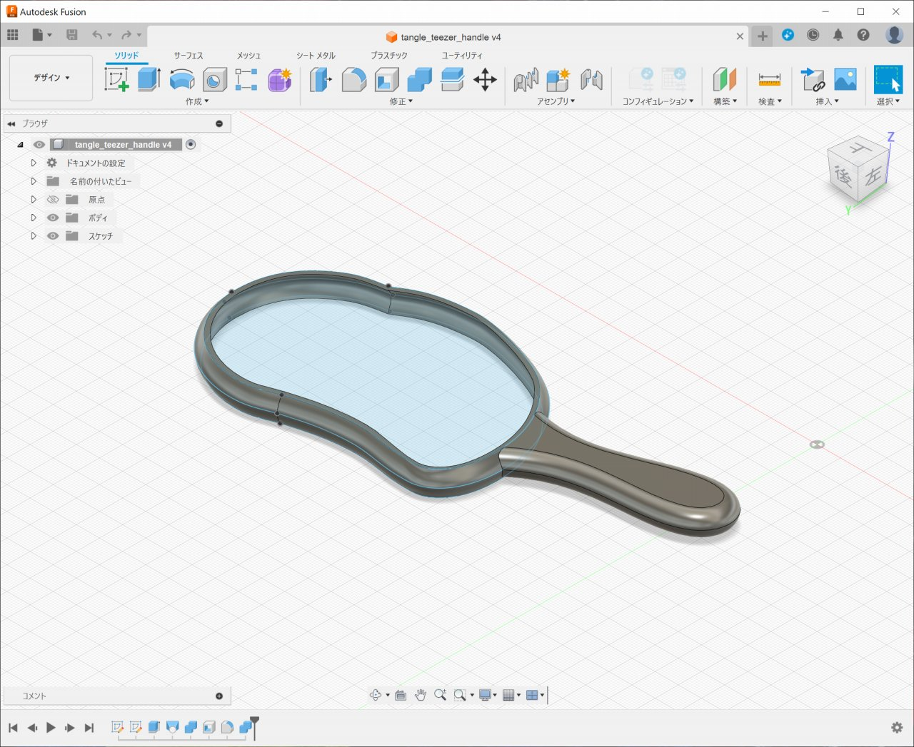

タングルティーザー用持ち手制作記録
概要
タングルティーザー（ザ・オリジナル）用持ち手の制作記録。主にワークフロー。
はじめに
タングルティーザーという絡みにくいことで有名なヘアブラシがあるのですが、標準品（ザ・オリジナル）は滑りやすい形状・材質のため使用中にすっぽ抜けることがあり不満に思っていたので持ち手を制作することにしました。なお、現在は持ち手つきモデルが存在するので、新規購入するならそちらをお勧めします。
完成品
少しあそびがあるのでゴムで抑えています。
STLファイルのライセンスについて
- 著作権は放棄していません
- 非営利目的の利用に限ります
- 無保証です（このファイルを使用したことによるいかなる損害にも著作権者が責任を負うことはありません）
- 著作権者が配布し続けている限り、再配布禁止です
ワークフロー
- 被写体をカッティングマットに載せて、スマホで真上から写真を撮る。歪まないように35㎜換算100㎜(4倍ズーム)程度。

- Affinity Designer 2 でスケール調整の後、カーブ（イラレで言うところのパス）引いて DXF でエクスポート

- Autodesk Fusion で DXF をインポートして、厚み・持ち手をつけてモデリングし、STL でエクスポート

- 3D プリンタで印刷して合体し、グラグラしないようにゴムをかけて完成